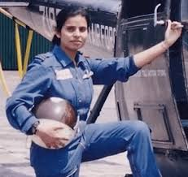

Introduction
Gunjan Saxena is an Indian Air Force pilot and one of the first women
to fly in a combat zone. She is known for her bravery during the Kargil War.
Early Life
- Full Name: Gunjan Saxena
- Born: 1975
- Birthplace: India
- Father: Indian Army officer
Education
- Completed her studies in India
- Trained to become a pilot
Career
- Joined the Indian Air Force
- Served as a helicopter pilot
- Participated in the Kargil War
Major Achievements
- One of the first women IAF pilots in combat
- Rescued injured soldiers during war
- Known as the “Kargil Girl”
Challenges
- Faced gender discrimination in a male-dominated field
- Overcame difficulties through determination
Life Today
- Continues to inspire young women to join the armed forces
Conclusion
Gunjan Saxena is a symbol of courage, dedication,
and women empowerment in India.
⬅ Back